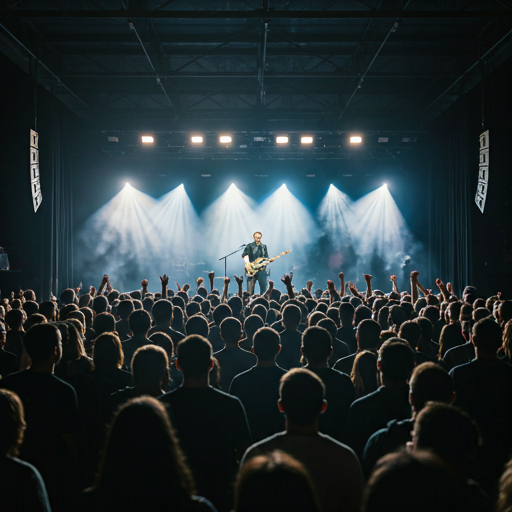

Live4Fair
Impact Catalyst application · Zurich 2026
Live4Fair
Community-supported infrastructure for fairly paid local live culture.
Live4Fair is a Zurich pilot for local live culture where member support helps pay artists, activate rooms, and fund the cultural work needed to make meaningful nights possible.
CHF 29Pilot membership anchor
100 membersUnlock one monthly event block
10 artistsVisible pool per member block
4 pillarsArtists, venues, community, cultural workers

The pitch is not a finished-system claim. It is a disciplined pilot proposal built to make fairer local culture visible in practice.